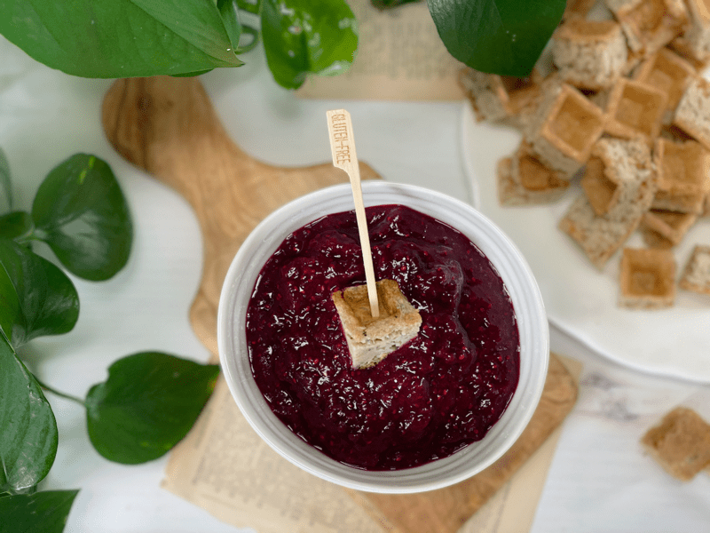
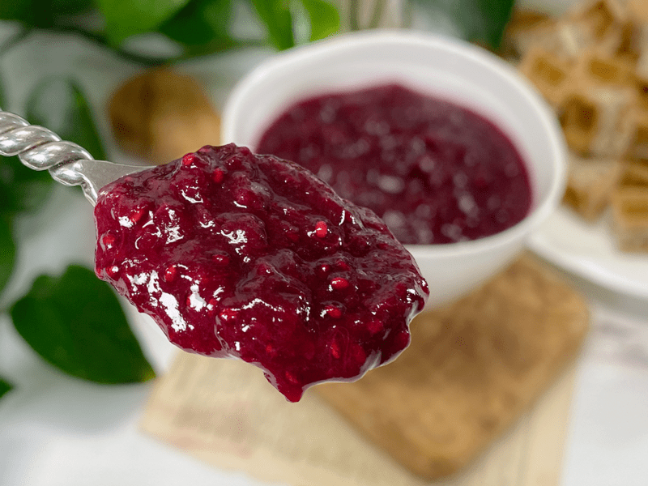

Cherry Rhubarb Sauce | Cooked | Sugar-Free
It’s sweet. It’s tart. And it’s saucy! For a while now, I have been embarking on a sugar-free adventure. In the last decade, I haven’t been one to eat much sugar, regardless of what form it comes in. But sugar is sneaky, like a burglar who breaks into your body when no one is looking and robs you of your health. Besides…I am just one of those strange characters who loves fine-tuning their diet. I am always rotating foods in or out to see how my body responds. Anyway, I have been dabbling with low-sugar fruits, finding unique ways to enhance my dishes.

Last week I made a Strawberry Rhubarb sauce that sent me in a blast from the past, tailspin of childhood memories. The joy and comfort that those memories brought me were just too good to let go, so I decided to play around with rhubarb a bit more.
Cherries aren’t in season just yet; in Oregon, we don’t get them until July. But I was able to get my hands on some frozen organic Bing cherries and I had a feeling that they would pair well with my fresh rhubarb. The result was outstanding. When making this sauce, you can blend it into a smooth purée or you can pulse the ingredients in the blender just a couple of times to maintain some texture…which is my favorite way to enjoy it.
I love to eat this sauce with a spoon while sitting out on the deck with the sun kissing my cheeks, but I have also found that I love it in steel-cut oatmeal porridge or as a dipping sauce for waffles. For breakfast ideas, click (here). It’s also amazing spooned over Banana Ice Cream.
Making Every Bite Count
- Organic. Cherries are in the top Dirty Dozen, so if you wish to indulge in them, please make sure that you look for organically grown.
- Here’s a tip on purchasing rhubarb…the redder the stalk, the sweeter the flavor. Look for firm stalks free from blemishes. Recipes turn out best when we start with high-quality ingredients. The leaves attached to the rhubarb stalk are poisonous. No matter how enticing, green, and crisp those leaves look, you should always discard that part of the plant.
- Chia seeds are optional, so if you have health issues that require you to avoid such seeds, go ahead and leave them out. Their role in this recipe is to act like a binder as it thickens up. Chia seeds also bring in more nutrients. A one-ounce (28 grams) serving of chia seeds contains (1): 11 grams fiber, 4 grams protein, 9 grams fat, manganese, calcium, magnesium, phosphorus, and a decent amount of zinc, vitamin B3 (niacin), potassium, vitamin B1 (thiamine), and vitamin B2.

Ingredients
Yields 2 cups
- 2 cups rhubarb, diced
- 1 cup organic cherries, pitted
- 1/4 tsp sea salt
- 1 Tbsp chia seeds
- Liquid Stevia or other Sweetener – optional
-
In a medium saucepan, combine the rhubarb, cherries, and salt. Cover, let cook down, and bring to a gentle simmer over low-medium heat, stirring frequently.
- Once the two have cooked down, taste test (careful, it will be hot) and see if you want to add any sweetener. If so, now is the time.
- Adding salt to the base will help round out the sweet and sour flavors.
- A long, slow simmer drives the moisture out of the fruit, helping to preserve and thicken it at the same time.
- If the mixture starts sticking to the base of the pan, the temperature is too high; reduce it.
-
Once both fruits are soft, it’s time to blend into a thick sauce. Add the hot mixture to the blender with the chia seeds and stevia (or sweetener of choice).
- Let cool, then transfer to clean jars.
-
The sauce will keep in a sealed container in the refrigerator for up to 2 weeks. You can also freeze it for up to 3 months without affecting the flavor. Make sure that you use freezer-safe jars or containers that are airtight. Label and date each jar.

© AmieSue.com